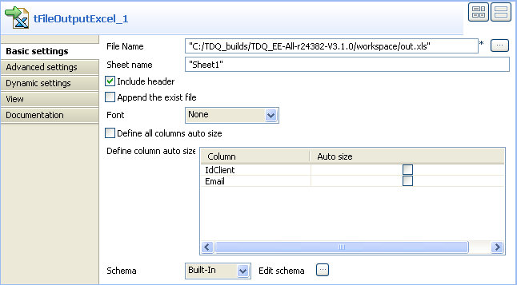

Avertissement
Ce composant est disponible dans la Palette du studio si vous avez souscrit à l'un des produits Talend Platform.
|
Famille de composant |
Data Quality | |
|
Fonction |
Le tFuzzyJoin joint deux tables, en appliquant la correspondance floue dans plusieurs colonnes. Il compare les colonnes du flux principal et les colonnes de référence du flux de référence (Lookup), et écrit les données du flux principal et/ou les données rejetées. | |
|
Objectif |
Il aide à vérifier la qualité des données de n’importe quelle source par rapport à une source de données de référence. | |
|
Basic settings |
Schema et Edit Schema |
Un schéma est une description de lignes, il définit le nombre de champs qui sont traités et passés au composant suivant. Le schéma est soit local (built-in) soit distant dans le Repository. |
|
|
|
Built-in : Le schéma est créé et conservé pour ce composant seulement. Voir également le Guide utilisateur de Talend Data Integration Studio. |
|
|
|
Repository : Le schéma existe déjà et est stocké dans le Repository. Ainsi, il peut être réutilisable dans divers projets et Job designs. Voir également le Guide utilisateur de Talend Data Integration Studio. |
|
|
Include lookup columns in output |
Cochez cette case pour inclure les colonnes de référence (lookup), que vous avez définies, dans le flux de sortie. |
|
|
Input key attribute |
Sélectionnez la ou les colonne(s) du flux principal qui doivent être vérifiées par rapport à la colonne clé de référence (lookup). |
|
|
Lookup key attribute |
Sélectionnez les colonnes clé de référence (lookup) que vous utiliserez comme référence, afin de les comparer aux colonnes du flux d’entrée. |
|
|
Matching type |
Sélectionnez l’algorithme de correspondance dans la liste : Exact Match : associe chaque entrée traitée à toutes les entrées possibles de référence qui ont exactement la même valeur. Levenshtein : cette option se base sur la théorie de la distance d’édition. Elle calcule le nombre d’insertions, suppressions ou substitutions nécessaires pour qu’une entrée corresponde à l’entrée de référence. Metaphone : Cette option se base sur un algorithme phonétique afin d’indexer les entrées selon leur prononciation. Elle charge d’abord la phonétique de toutes les entrées du flux lookup de référence, puis vérifie toutes les entrées du flux principal par rapport aux entrées du flux de référence. Double Metaphone : une nouvelle version de l’algorithme phonétique Métaphone, qui produit des résultats plus précis que l’algorithme originel. Il peut retourner un code primaire et un code secondaire pour une chaîne de caractères. Cela est utile dans des cas ambigus, mais également pour de multiples variantes de noms de famille aux origines communes. |
|
|
Case sensitive |
Cochez cette case pour prendre en compte la casse. |
|
|
Min. distance |
Uniquement pour Levenshtein. Paramétrez le nombre minimal de changements permis afin de correspondre à la référence. Si vous saisissez 0, seules lse correspondances parfaites (Exact Match) seront retournées. NoteVous pouvez créer et stocker des variables de contexte pour les distances minimale et maximale, et faire en sorte que votre Job fasse une boucle sur ces valeurs, en commençant par la valeur maximale inférieure de correspondance et terminant par la valeur maximale supérieure afin de correspondre au plus grand nombre de lignes possible. Vous pouvez appuyer sur Ctrl+Espace pour accéder à la liste des variables et sélectionner les nouvelles variables de contexte. Pour plus d’informations à propos des variables de contexte, consultez le Guide utilisateur de Talend Data Integration Studio. |
|
|
Max. distance |
Uniquement pour Levenshtein. Paramétrez le nombre maximal de changements permis afin de correspondre à la référence. |
|
|
Inner join (with reject output) |
Cochez cette case pour joindre d’abord les deux tables et ensuite rassembler les données rejetées du flux principal. |
|
Advanced settings |
tStatCatcher Statistics |
Cochez cette case pour collecter les métadonnées de process du Job, aussi bien au niveau du Job qu’au niveau de chaque composant. |
|
Utilisation |
Ce composant n’est pas un composant de début (fond vert), il nécessite deux composants d’entrée, et un ou plusieurs composant(s) de sortie. | |
Ce scénario Java décrit un Job à cinq composants dont le but est : en premier lieu, de vérifier la distance d’édition entre la colonne IdClient d’un fichier d’entrée, par rapport aux données du fichier de référence d’entrée, et, ensuite, de vérifier tous les e-mails par prononciation dans la colonne Email, par rapport aux données du fichier d’entrée de référence. Les sorties de ces deux types de correspondances sont écrits dans des fichiers distincts.
Dans ce scénario, vous avez déjà stocké les schémas d’entrée et les fichiers de référence dans le Repository. Pour plus d’informations à propos du stockage de métadonnées dans l’arborescence du Repository, consultez le Guide utilisateur Talend Data Integration Studio.
Dans l’arborescence du Repository, développez le nœud Metadata ainsi que le nœud des fichiers (File) où vous avez stocké les schémas d’entrée, et glissez la métadonnée correspondante dans l’espace de modélisation graphique.
La boîte de dialogue [Components] s’ouvre.

Sélectionnez tFileInputDelimited dans la liste et cliquez sur OK afin de fermer la boîte de dialogue.
Le composant tFileInputDelimited apparaît dans l’espace de modélisation. Le fichier d’entrée utilisé dans ce scénario est appelé ClientSample. Il contient douze colonnes, y compris les deux colonnes IdCient et Email sur lesquelles vous voulez appliquer la correspondance floue.
Répétez l’opération pour le deuxième fichier d’entrée que vous souhaitez utiliser comme référence, ClientSample_Update dans ce scénario.
Glissez les composants suivants de la Palette dans l’espace de modélisation graphique : tFuzzyJoin, tFileOutputExcel, et tFileOutputDelimited.

Connectez les fichiers principal et de référence au tFuzzyJoin à l’aide de liens Main Row. Le lien principal entre le fichier de référence et le tFuzzyJoin s’affiche comme un lien Lookup (de référence) dans l’espace de modélisation.
Connectez le tFuzzyJoin au tFileOutputExcel à l’aide d’un lien Main, et le tFuzzyJoin au tFileOutputDelimited avec un lien Inner join reject.
Au besoin, double-cliquez sur les fichiers d’entrée principal et de référence afin d’afficher leur vue Basic settings. Toutes les propriétés sont automatiquement renseignées. Si vous ne définissez pas vos fichiers d’entrée dans le Repository, remplissez les champs manuellement, après avoir sélectionné Built-in dans le champ Property Type.
Double-cliquez sur le tFuzzyJoin afin d’afficher sa vue Basic settings et définir des propriétés.

Cliquez sur le bouton Edit schema pour ouvrir une boîte de dialogue qui affiche la structure des données des fichiers d’entrée, et définir les donnéese que vous voulez passer aux composants de sortie, deux colonnes dans ce scénario, IdClient et Email.

Cliquez sur OK pour fermer la boîte de dialogue.
Sous le tableau Key definition de la vue Basic settings du tFuzzyJoin, cliquez sur le bouton [+] afin d’ajouter deux colonnes à la liste, puis sélectionnez les colonnes d’entrée et de sortie sur lesquelles vous voulez appliquer la correspondance floue, depuis les listes Input key attribute et Lookup key attribute, respectivement IdClient and Email dans cet exemple.
Cliquez sur la première cellule de la colonne Matching type, et sélectionnez dans la liste la méthode à utiliser afin de vérifier les données entrant, par rapport aux données de référence. Dans ce scénario, Levenshtein est le type de correspondance devant être utilisé.
Paramétrez ensuite les distances minimale et maximale. Dans cette méthode, la distance est le nombre de modifications devant être apporté aux caractères (insertion, suppression ou substitution) afin de correspondre entièrement aux références. Dans cet exemple, l’objectif est de faire en sorte que la distance minimale soit égale à 0 et que la distance maximale soit égale à 2. Cela conduira à l’écriture des toutes les entrées dans IdClient qui correspondent exactement ou qui ont, au maximum, deux caractères modifiés.
Note
Vous pouvez créer et stocker des variables de contexte pour les distances minimale et maximale, et faire en sorte que votre Job fasse une boucle sur ces valeurs, en commençant par la valeur maximale inférieure de correspondance et terminant par la valeur maximale supérieure afin de correspondre au plus grand nombre de lignes possible. Vous pouvez appuyer sur Ctrl+Espace pour accéder à la liste des variables et sélectionner les nouvelles variables de contexte. Pour plus d’informations à propos des variables de contexte, consultez le Guide utilisateur de Talend Data Integration Studio
Paramétrez le type de correspondance pour la seconde colonne qui sera vérifiée, Metaphone dans cet exemple. Il n’y a ni distance minimale, ni distance maximale à paramétrer, car cette méthode de correspondance est basée sur les divergences phonétiques entre les données d’entrée et de référence.
Cochez la case Inner join (with reject output) pour définir l’une des sorties comme table des rejets de la jointure interne.
Double-cliquez sur le tFileOutputExcel afin d’afficher sa vue Basic settings et définir ses propriétés.
Paramétrez le répertoire de destination ainsi que le nom de la feuille (Sheet name), et cochez la case Include header.
Double-cliquez sur le tFileOutputDelimited afin d’afficher sa vue Basic settings et définir ses propriétés.

Paramétrez le répertoire de destination ainsi que les séparateurs de lignes et de champs, puis cochez la case Include header.
Sauvegardez votre Job, et cliquez sur F6 pour l’exécuter.
La sortie de la correspondance Levenshtein de la colonne IdClient est écrite dans le fichier Excel défini, et la sortie de la correspondance du métaphone de la colonne Email est écrite dans le fichier délimité défini.